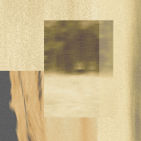
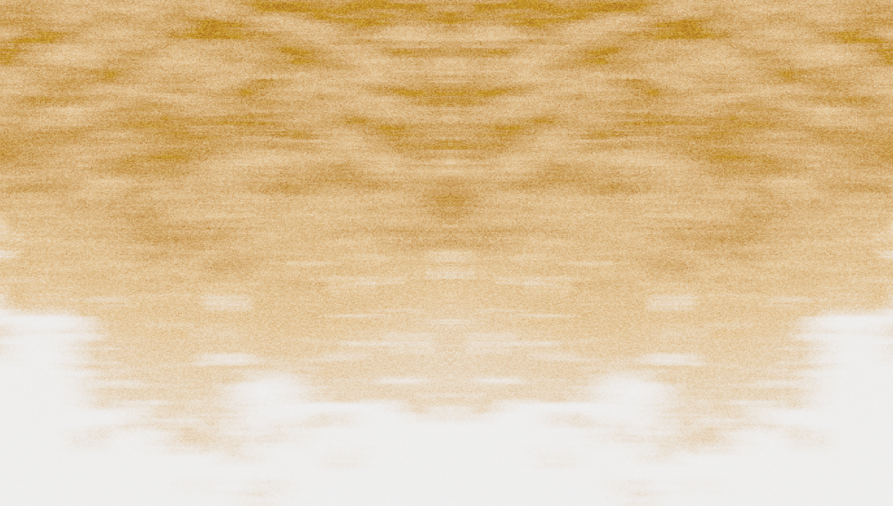
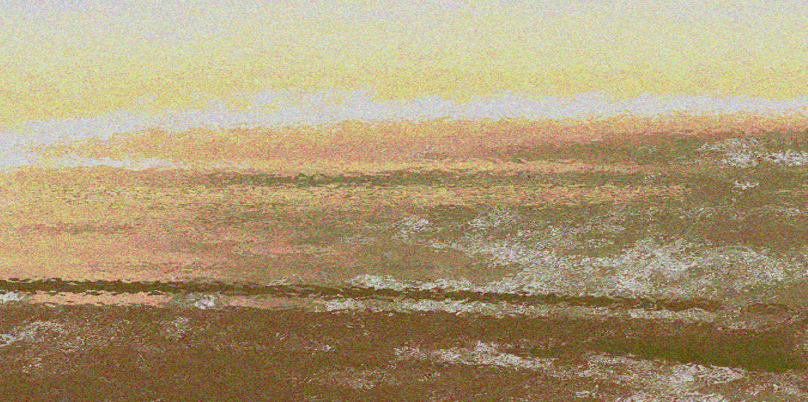

2025 • 3 tracks • 44 min
" 曾經只想當一粒灰塵 漂泊在沒有人的世界裡 突然有一道光照進... "


微光
曾經只想當一粒灰塵 漂泊在沒有人的世界裡
突然有一道光照進 我開始笑的大聲 盡情大哭 成了個鮮明的活人
這些代表我活著的聲音 我都記得
shimmer
I only wanted to be a speck of dust
Drifting in a world without people
Suddenly a ray of light shines in
I started laughing loudly and crying loudly, becoming a vivid living person.
These are my living voices. I remember them all them all...